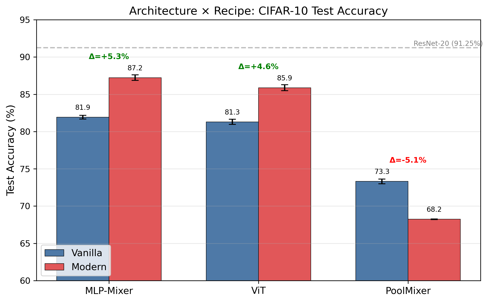
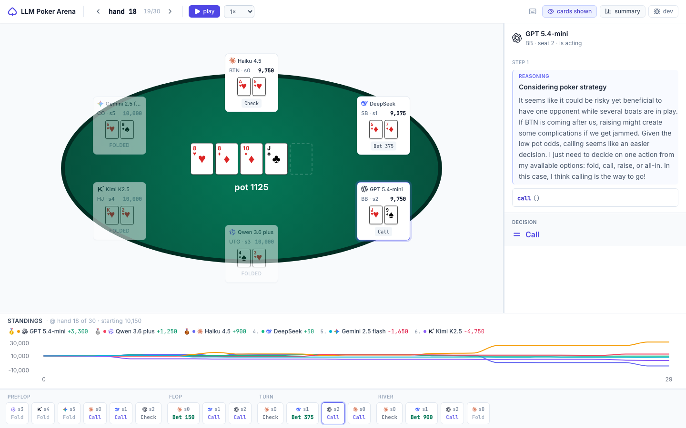
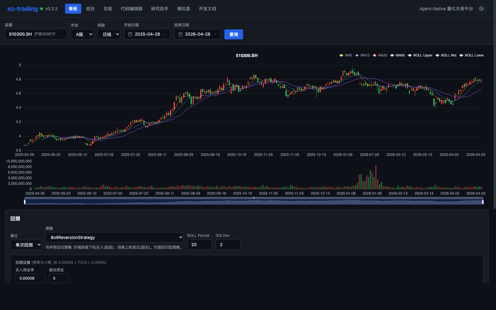

|
Jay (Zhan) Cheng
I received my Bachelor's degree in Mathematics from the
University of Wisconsin–Madison
in May 2026, with a major in Mathematics for Programming and Computing
and a minor in Computer Science. I'm honored to have been mentored by
Prof. Yushun Dong at the
Responsible AI (RAI) Lab.
This summer I'll be at Microsoft Research Asia
exploring agentic systems; in January 2027 I'll join
the National University of Singapore
for the Master of Financial Engineering program.
I'm currently open to research and internship opportunities in both
AI and quantitative finance.
My research interests center on
Agentic Reinforcement Learning,
with a long-standing fascination for mechanism-level improvements
and innovations — attention variants, RLVR (reinforcement learning
with verifiable rewards), and similar architectural-or-algorithmic
interventions. Most recently I've been following
GDPO and exploring how
OneTrans can be combined with
Looped Transformers. Earlier work focused on data
mining, graph neural networks, and theoretical guarantees in AI
safety.
If any of this resonates, feel free to drop me an email — I'm
always happy to chat.
Email /
Scholar /
GitHub /
LinkedIn
|
|
News
|
- 05/2026 — Honored to be joining
Microsoft Research Asia
as a Research Intern, working on LLM agents.
- 04/2026 — One paper accepted by ICML 2026 (Regular).
- 04/2026 — Solved Jane Street's Dropped a Neural Net puzzle; started competing in Tencent KDD Cup 2026.
- 03/2026 — Submitted a low-rank-Q solution to OpenAI's Parameter Golf challenge.
- 11/2025 — One paper accepted by AAAI 2026 (Oral).
- 08/2025 — One paper accepted by KDD 2025 (Poster).
|
CREDIT: Certified Defense of Deep Neural Networks against Model Extraction Attacks
Bolin Shen, Zhan Cheng, Neil Zhenqiang Gong, Fan Yao, Yushun Dong
International Conference on Machine Learning (ICML 2026, Regular)
First certified ownership verification framework for DNNs against model extraction attacks.
|
FAST-CAD: A Fairness-Aware Framework for Non-Contact Stroke Diagnosis
Tianming Sha, Zechuan Chen, Zhan Cheng, Haotian Zhai, Xuwei Ding, Keze Wang
AAAI Conference on Artificial Intelligence (AAAI 2026, Oral)
Fairness-aware framework for non-contact stroke diagnosis combining domain-adversarial training with Group-DRO.
|
ATOM: A Framework of Detecting Query-Based Model Extraction Attacks for Graph Neural Networks
Zhan Cheng, Bolin Shen, Tianming Sha, Yuan Gao, Shibo Li, Yushun Dong
ACM SIGKDD Conference on Knowledge Discovery and Data Mining (SIGKDD 2025, Poster)
Real-time detection of query-based model extraction attacks on GNNs via sequential modeling, RL, and k-core embedding.
|
Preprints
|
-
TRIDENT: An Efficient Data-Free Model Extraction Attack for Graph Neural Networks
Zhan Cheng, Haoyan Xu, Tianming Sha, Yue Zhao, Mengyuan Li, Yushun Dong.
Preprint, 2026.
-
CITED: A Decision Boundary-Aware Signature for GNNs Towards Model Extraction Defense
Bolin Shen, Md Shamim Seraj, Zhan Cheng, Shayok Chakraborty, Yushun Dong.
arXiv:2602.20418, 2026.
-
Graph Synthetic Out-of-Distribution Exposure with Large Language Models
Haoyan Xu, Zhengtao Yao, Ziyi Wang, Zhan Cheng, Xiyang Hu, Mengyuan Li, Yue Zhao.
arXiv:2504.21198, 2025.
|
|

Auto-generated by InfiEpisteme
(NeurIPS 2026 submission)
|
InfiEpisteme
Describe a research idea in natural language, get back a peer-review-quality paper, clean code, and organized results — all orchestrated end-to-end by Claude Code. 19 markdown-based skills driving literature survey → experiment → paper writing; three-layer quality gates with human checkpoints; distributed orchestration spawning independent instances on GPU servers.
|
|

Live demo
|
llm-poker-arena
Six LLM providers face off in 6-max No-Limit Hold'em — same engine, same seed, every reasoning step replayable in the browser. Three demos at escalating tiers (mini → single-flagship swap → all-flagship) reveal that Anthropic's seat goes 6th → 1st → 6th as the field upgrades alongside it. Capability isn't monotonic; the most expensive flagship loses the most chips.
|
|

Strategy backtest dashboard
|
OpenTrading
Open-source quantitative trading platform for A-share markets — strategy backtest (T+1, limit-up/down, stamp tax), factor research (IC/RankIC/decay/groupings), portfolio optimization (mean-variance, risk parity, Brinson attribution), walk-forward + bootstrap validation, simulated trading via QMT broker integration, and a 9-estimator ML-alpha pipeline. 3,000+ tests; browser-only workflow.
|
|
|
National University of Singapore
Master of Financial Engineering, Jan 2027 – present (incoming)
|
|
|
Microsoft Research Asia
Research Intern, Summer 2026 (incoming)
Working on LLM agents under Dr. Kaixin Wang.
|
|
|
Responsible AI Lab, Florida State University
Remote Research Assistant, Fall 2024 – present
Mentored by Prof. Yushun Dong.
|
|
|
University of Wisconsin–Madison
B.S. in Mathematics, 2022 – May 2026
Major: Mathematics for Programming and Computing · Minor: Computer Science.
|
Competitions
|
-
Tencent KDD Cup 2026 (04/2026 – present, in progress)
Currently competing in the Tencent-hosted KDD Cup track on algo.qq.com.
-
Jane Street — Dropped a Neural Net (04/2026)
Reconstruct a 48-block ResNet from 97 shuffled weight pieces given only measurement-prediction pairs. Submitted a three-stage deterministic pipeline — Hungarian pairing via dynamic-isometry trace, then spectral seriation (Fiedler vector) refined by bubble sort on the 200 hardest samples — achieving MSE ≈ 1.6 × 10−14 vs the 10−10 target, in ~1.5 s on CPU and ~100 lines of Python.
-
OpenAI Parameter Golf (03/2026)
Train the smallest language model that fits in 16 MB; evaluated on FineWeb compression (bits/byte) under a 10-minute, 8×H100 training budget. Submitted an 11-layer model with low-rank Q-projection (rank 192) — 14.7 MB, val_bpb = 1.1548 (−0.019 vs baseline, p < 0.001), with 22% faster steps enabling ~28% more training within the time budget.
|
Service
|
- Reviewer, AAAI 2026 (Association for the Advancement of Artificial Intelligence)
- Reviewer, IEEE TIFS (IEEE Transactions on Information Forensics and Security)
|
|
© Jay (Zhan) Cheng 2026 ·
Template adapted from Jon Barron.
|
|
{kind=link}